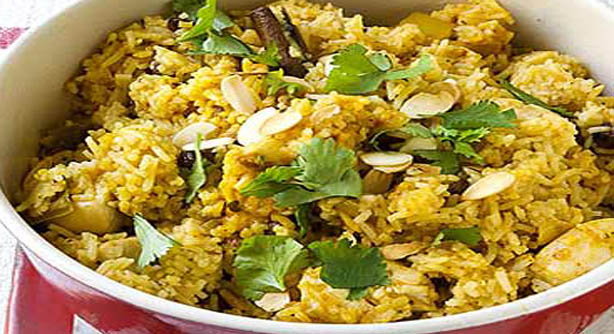

BIRYANI
Biryani is a popular dish throughout India. It is generally made from rice which consists of singular grains and spices like garlic, ginger and green chillies along with vegetables and meat. Click HERE for more information.